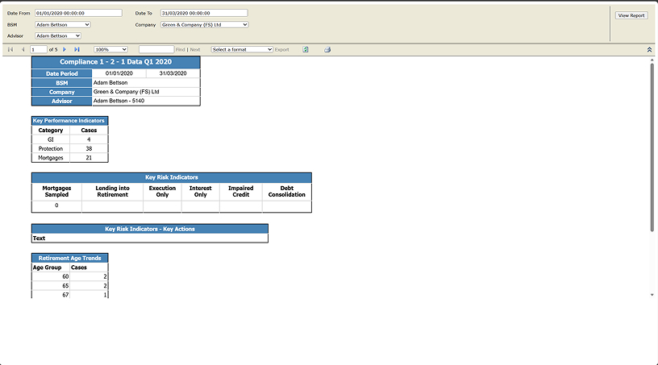
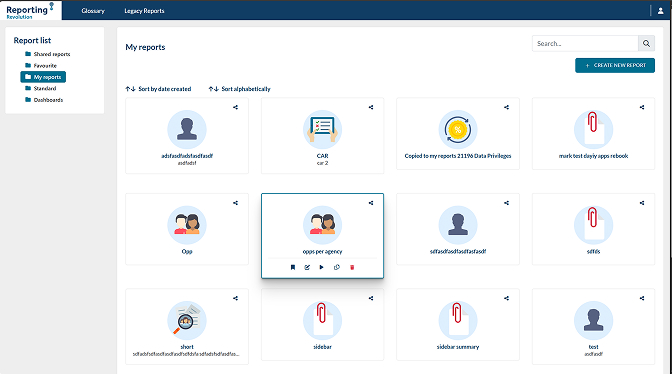
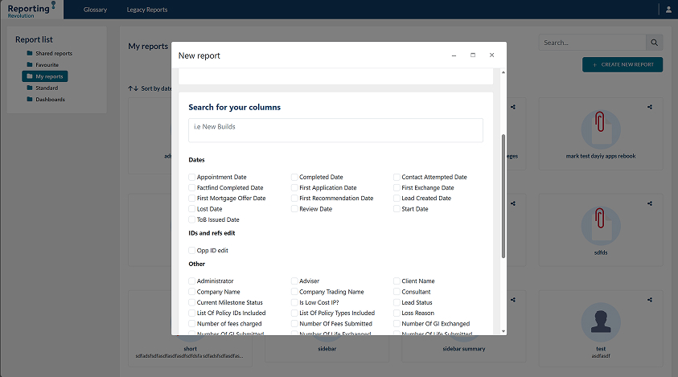
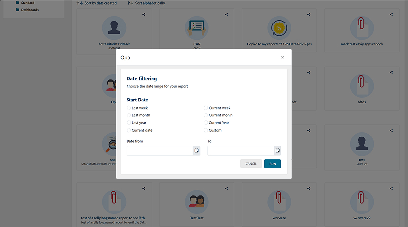
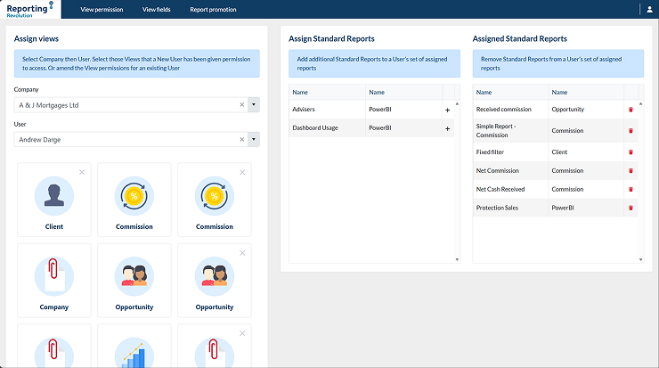

MI Reporting:
Scaling Data Intelligence
Decoupling a legacy database to build a self-serve analytics platform for Business Development Directors, eliminating developer bottlenecks.
1. The Legacy Bottleneck
As Stonebridge Mortgage Solutions scaled from 300 to over 1,300 advisors across 400+ companies, the legacy reporting system buckled. Reports were entirely reliant on Full-Stack Developers, taking up to a week to manually build, verify, and distribute. Worse, these legacy Microsoft queries were running on the live application database, frequently spiking CPU usage to 100% and causing critical load-balancing issues. We needed a decoupled, self-serve platform.

2. The Intelligence Dashboard
The first step was giving Directors a central command center. I designed a new homepage featuring a clean sidebar navigation and folder structure. This allowed users to instantly view, organize, and share custom reports across their specific business units without ever submitting an IT ticket.

3. The UX Challenge: The "Complexity Trap"
Our initial concept aimed to give users maximum flexibility by allowing complex conditional logic (e.g., "If Object A AND If Object B, THEN..."). However, user testing revealed it was too complicated for our demographic. If it was too simple, it was useless; if it was too flexible, the cognitive load was too high.
The Pivot: We scrapped the abstract conditional logic and analyzed years of legacy reports to find out what directors actually needed. I designed a Guided Wizard, prioritizing clear column selection and standardized filters that mapped directly to their daily business language.

Technical UX
Runtime Filters &
Server Protection
Giving users the power to run massive custom reports introduced a new risk: database overload. I designed a 2-Stage Reporting Protocol.
- 1. Runtime Configuration: Users apply final date filtering just before execution to narrow the query scope.
- 2. Preview vs. Export: The UI restricts visual rendering to a strict preview limit. If a report is massive, the UI forces a CSV/Excel download, shifting processing load to the user's local machine. (Note: Example output below is limited to a single redacted row to comply with strict FinTech data privacy laws).


5. Governance & Access Control
With sensitive financial data now easily accessible, governance was critical. I designed a robust Admin Settings matrix for the Support Desk. This interface allows them to define companies, assign users, and strictly control "View," "Edit," and "Share" permissions across the platform.
This permissions architecture also laid the groundwork for our future integration with embedded Power BI dashboards for macro-level analytics.

Efficiency
100% Self-Serve
Scale
1,300+ Advisors Tracked
Longevity
3+ Years In Production